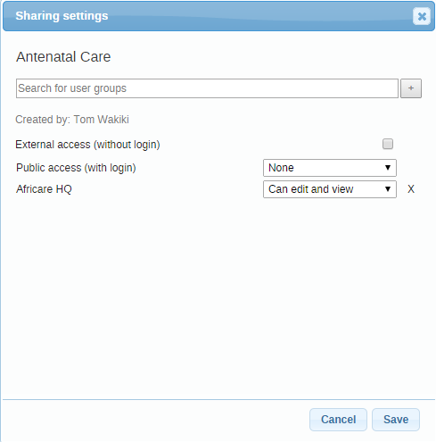

Many objects in DHIS2, like reports, charts, maps and indicators, can be shared. Sharing means making an object, like a report, available for reading or modification to a group of users or to everyone. For instance for reports, the sharing dialog can be opened by clicking on the "Sharing settings" button next to each report in the list. Implementers can use this feature to allow access to certain objects to only certain user groups. Users can use the feature to decide who they would like to share objects (such as pivot tables, charts, dashboards, etc) with.
If sharing is supported for a particular class of objects, a dialog will be available called "Sharing settings", usually available by clicking on the name of the object or in the analytics tools, through an icon (Share with other people). Once you have accessed the sharing settings for the object you wish to share, a dialog similar to the one below will be shown.
The sharing dialog.
|  |
You can share your report with everyone or with a number of user groups. "External access" can be enabled to allow this resource to be shared with everyone, including users which cannot logon to DHIS2. This is useful for sharing public resources with external systems. Note, that if objects are shared externally, then they are visible to anyone who has access to the URL which provides the resource without any login credentials.
Next to "Public access" you can choose your public access option: "None", "Can view" or "Can edit and view". Public access refers to users which are logged into the system. Edit also implies deleting the report.
To share with a group, simply start typing the name of the group and the "Search for user groups" input field and select your desired group. Click on the "+" icon next to the input field to share with that group. For each group you can set an access option, similar to public access.
Sharing with a user group implies that all users in that group will get access to the shared object. To create a user group you can go to the dashboard module and click on "Groups". This will lead you to the list of groups where you can click "Add new" in the top right corner. Creating user groups is open for everyone from the dashboard module.